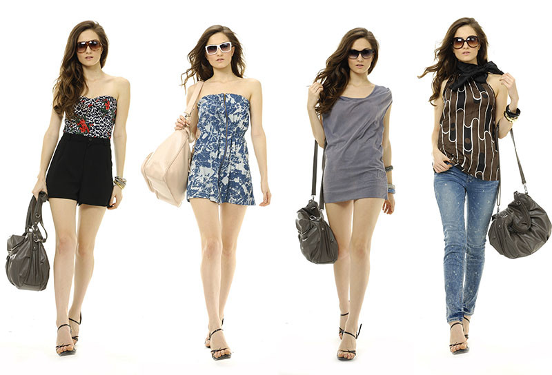

Statement Outerwear
Make a statement with bold outerwear pieces that add flair to any outfit. Think oversized coats, colorful trenches, and textured fabrics that turn heads.
This season, fashion is all about bold colors, oversized silhouettes, and vintage-inspired pieces. From statement accessories to vibrant prints, discover the latest trends that are making waves in the fashion world.
Stay ahead of the trends with our curated selection of must-have items and style tips. Whether you're revamping your wardrobe or just looking for inspiration, we've got you covered with the hottest looks of the season.
This year, vintage fashion is making a major comeback. From retro prints to classic cuts, vintage-inspired pieces are dominating the runway. Learn how to incorporate these timeless styles into your modern wardrobe.
Make a statement with bold outerwear pieces that add flair to any outfit. Think oversized coats, colorful trenches, and textured fabrics that turn heads.
Chunky boots and sneakers are in vogue this season. They provide both comfort and style, making them perfect for everyday wear and special occasions alike.